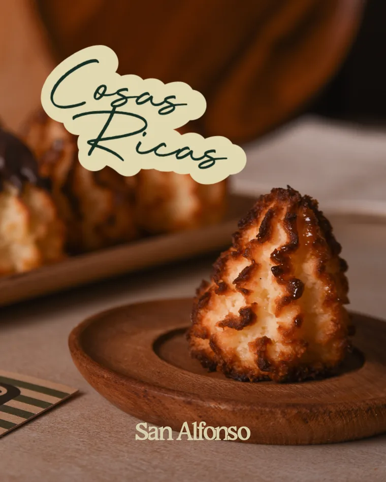
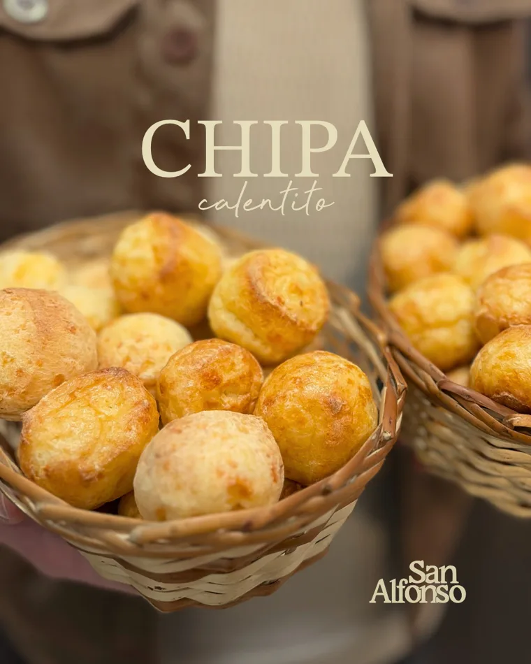
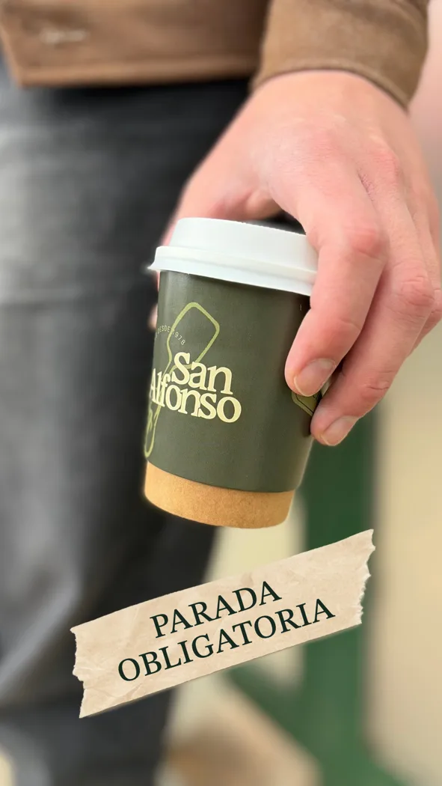
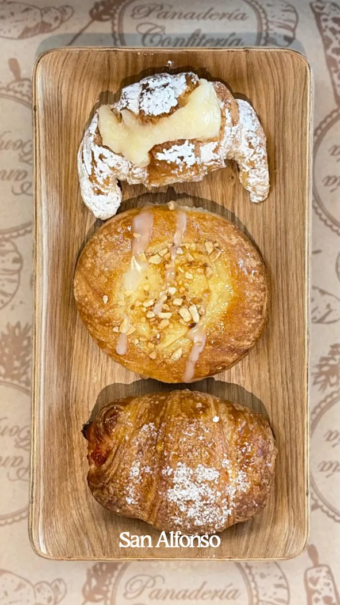
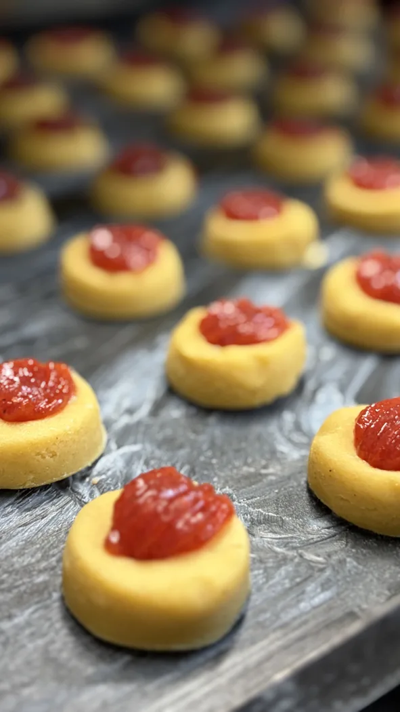

MARKETING & CONTENIDOS
San Alfonso
Gestión de redes, fotografía y video para acompañar la nueva identidad de una panadería de Córdoba.


Resultados
- Visualizaciones en Instagram
- 255.057
- Cuentas alcanzadas en Instagram
- 106.100
- Alcance de campañas en Meta
- 91.015
Datos del período relevado. La inversión en Meta Ads fue de ARS 43.047,84. Las cifras corresponden a visibilidad y alcance.
Una nueva identidad en redes
San Alfonso me contactó mientras una agencia renovaba su identidad visual. Buscaban a alguien que se hiciera cargo de Instagram y pudiera sostener la comunicación una vez terminado el rediseño.
En enero empecé a gestionar sus redes. En junio relanzamos Instagram con la nueva identidad. Desde entonces, uso las plantillas y recursos que dejó la agencia para crear los contenidos del mes.
Del calendario al feed
Armo el calendario mensual, propongo temas y formatos, escribo los textos y adapto las piezas a la identidad de San Alfonso. El contenido muestra los productos y las pequeñas rutinas del local, desde un café para llevar hasta una merienda en la panadería.



Foto y video en la panadería
Cada mes o cada dos meses voy al local a producir fotos y videos. Registro el espacio, los productos y cómo se preparan. De cada visita sale material para reels, publicaciones e historias.

